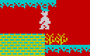
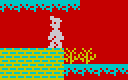
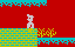
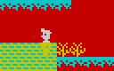

The animated platform
There is a platform at (9,7) in
Amoebatrons' Revenge whose third row
of pixels is animated as if it were a conveyor. This is because there is a
conveyor defined at that location (see
63087), but the cavern layout places
regular platform tiles there instead of conveyor tiles.
To disable the animation (by moving the conveyor up a row to (8,7), which is
occupied by background tiles):
Nine lives in the light
The code that decreases the air supply when Willy is in the light beam in
Solar Power Generator doesn't check whether the air has run out, and
so depending on the remaining air supply at
32956 and the game clock at
32957 when Willy enters the beam, he will not necessarily die when the air
runs out; instead the air supply is replenished a little and then depleted,
repeatedly up to eight times - until the game clock hits zero upon exiting the
beam-controlling routine at
36211.
To see Willy survive eight air supply depletions, use the following POKEs:
POKE
33885,7 - press keys 256 to teleport to the cavern
POKE
36252,24 - make the light beam pass through guardians
POKE
64104,208 - Willy's initial pixel y-coordinate * 2
POKE
64108,183: POKE 64109,93 - Willy's initial position
POKE
64188,39 - initial air supply
POKE
64211,255 - remove the yellow guardian at ground level
Through the wall
If Willy jumps left over the two nasties at the bottom right of
Eugene's Lair such that he lands on the top layer of bricks with
animation frame 3 at step 16 of the jumping animation, he will then fall
through them to the bottom layer of bricks:
|  |
 |
 |
 |
| Step 15 |
Step 16 |
Step 17 |
Step 18 |
This happens because the section of code at
35600 - which is executed during
jumping animation step 16, after Willy's y-coordinate has been updated so that
he's exactly one cell height above the place he jumped from, but before his
x-coordinate has been updated - checks whether there are any nasty tiles in the
cells below Willy's sprite. If there are (as is the case here), the code jumps
forward to
35665, which makes Willy proceed to the next jumping animation
step (as if the bricks were not there), instead of landing on the bricks.
Perhaps the assumption in this code is that if there is a nasty tile below
Willy's sprite in step 16, then he will be killed by the nasty before reaching
step 17; however, in this particular case Willy's x-coordinate decreases by one
during step 16 (as he transitions from animation frame 0 to frame 3), which
moves him out of the nasty's range.
Through the wall again
It's also possible to jump and land inside a wall block even when there is no
nasty next to it.
If Willy's animation frame is 0 at step 16 of the animation while Willy is
jumping left, the code at
35996 checks whether Willy is free to move left
across a cell boundary. However, the part of that code that checks whether
there is a wall tile below Willy to the left is skipped when Willy's sprite is
cell-aligned (i.e. when his pixel y-coordinate at
32872 is a multiple of 16),
which is always the case at step 16. Consequently, Willy moves left across the
cell boundary and then, in step 17, he moves down into the wall block below
before any check is made for wall blocks beneath him, eventually landing with
animation frame 2.
Places where this can happen are:
Similarly, if Willy's animation frame is 3 at step 16 of the animation while
Willy is jumping right, the code at
36054 checks whether Willy is free to
move right across a cell boundary. However, the part of that code that checks
whether there is a wall tile below Willy to the right is skipped when Willy's
sprite is cell-aligned (i.e. when his pixel y-coordinate at
32872 is a
multiple of 16), which is always the case at step 16. Consequently, Willy moves
right across the cell boundary and then, in step 17, he moves down into the
wall block below before any check is made for wall blocks beneath him,
eventually landing with animation frame 1.
Places where this can happen are:
When Willy lands inside a wall block, he can walk straight through it unless
another wall block is in the way.
Attribute crash
When a Skylab in
Skylab Landing Bay crashes into a section of floor or
conveyor, the attributes of that section are temporarily changed to that of the
Skylab; the attributes are restored after the Skylab has finished
disintegrating.
The reason for this is that the code at
36447 (which is used to set the
attributes for a Skylab) sets the attributes in not two but three rows of
cells, to handle the case where a guardian's sprite is not cell-aligned.
However, when a Skylab crashes, it
is cell-aligned, and so its
attributes needlessly bleed over to the floor or conveyor cells immediately
below it.
Blue shadow
As Willy enters
Solar Power Generator, the blue vertical guardian can
be seen casting a 'shadow' over the floor immediately below it.
This happens for the same reason as a Skylab's colour bleeds over into the
floor below when it crashes - see
Attribute crash. This effect does not
occur on subsequent occasions when the guardian approaches the floor, because
it never actually touches the floor again - its maximum pixel y-coordinate is
79, one less than its original y-coordinate of 80 (see
Out of bounds).